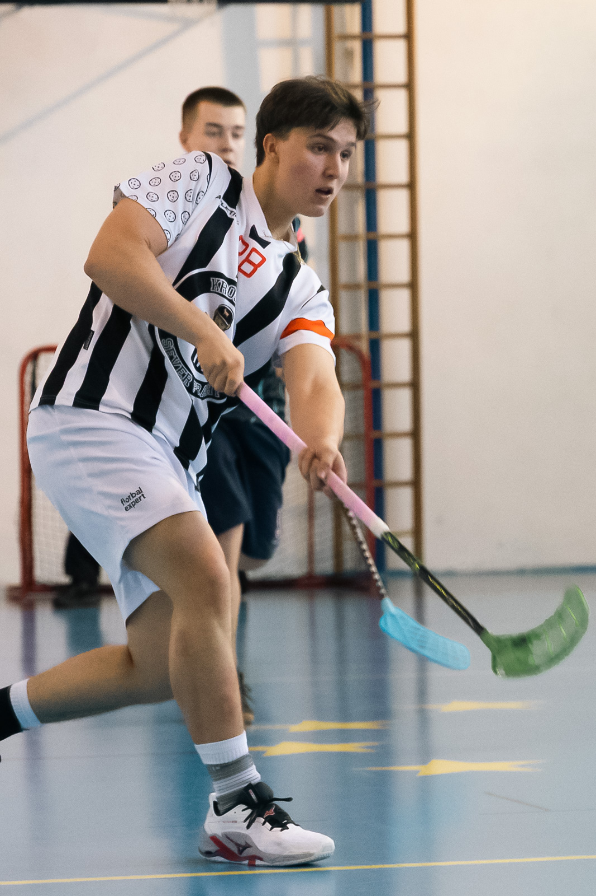
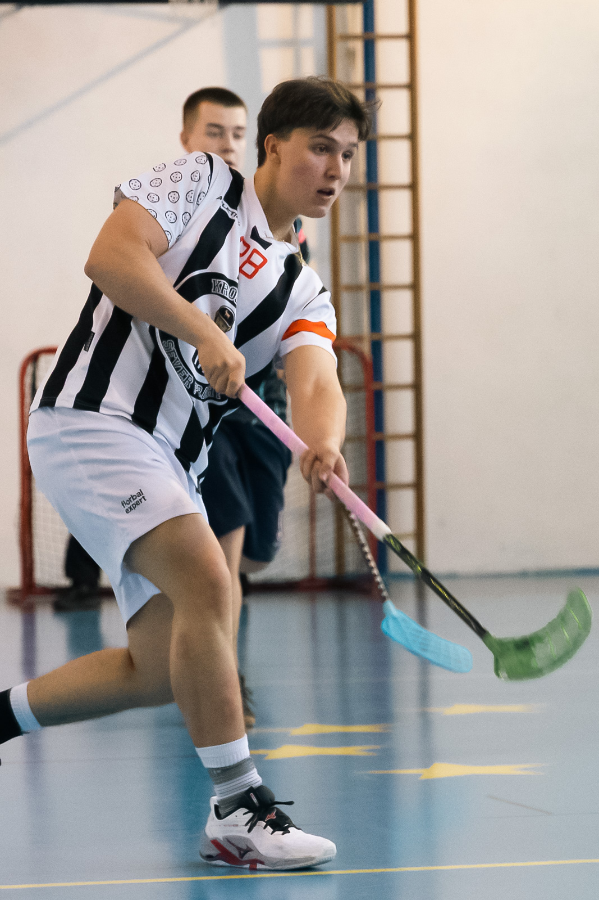

Adéla Boubelíkova

I am 17 years old
I study at a secondary vocational school ŠKOLA EU PRAHA
I am in my second year of studying media communication.
My field of study focuses on media and marketing, graphics and information systems.
Adéla Boubelíková
I am 17 years old
I study at a secondary vocational school ŠKOLA EU PRAHA
I am in my second year of studying media communication.
My field of study focuses on media and marketing, graphics and information systems.
In my free time, I do sports. I currently run track and field, but I used to play floorball. However, I would like to play hockey the most. In winter, my biggest fun is downhill skiing.
In my free time and at school, I also enjoy photography. It is my big hobby where I combine taking photos and sports.
I often photograph surrounding buildings or nature, but I enjoy photographing things in motion the most.
The best memory that comes to my mind is from 2024, when Czechia won the gold medal at IIHF2024. It was amazing to go see a match right in the arena. Sitting in the second row
next to the penalty box was a great experience for me. During the warm-up, I got a puck directly from the ice from the players. The celebrations of winning the gold medal were an experience I will never forget. High-fiving all the gold medal players was an honor.
Here are some of my photos:

 
